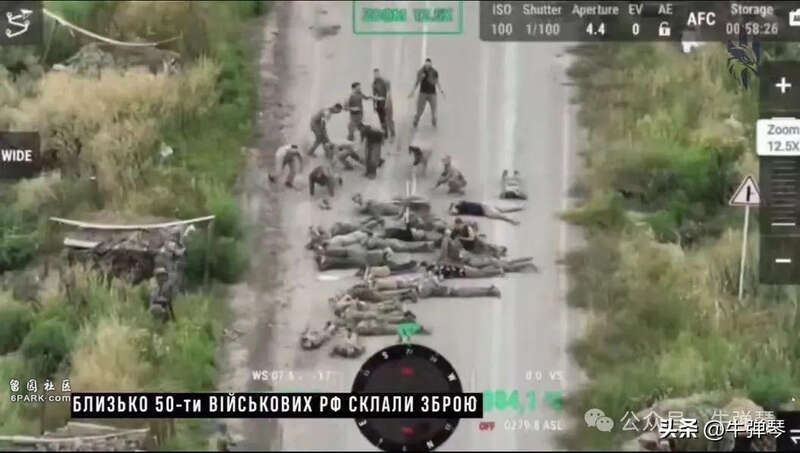
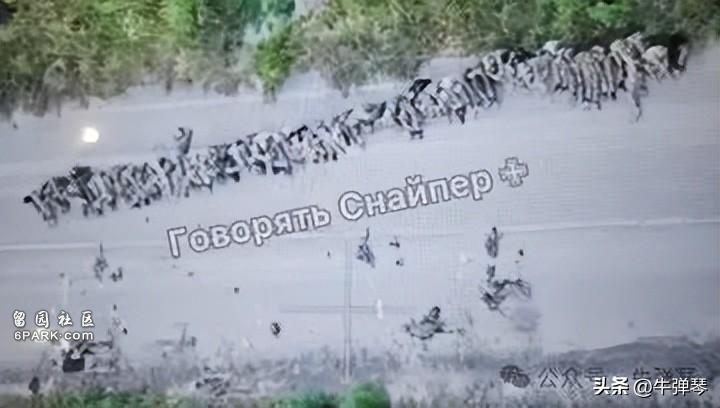
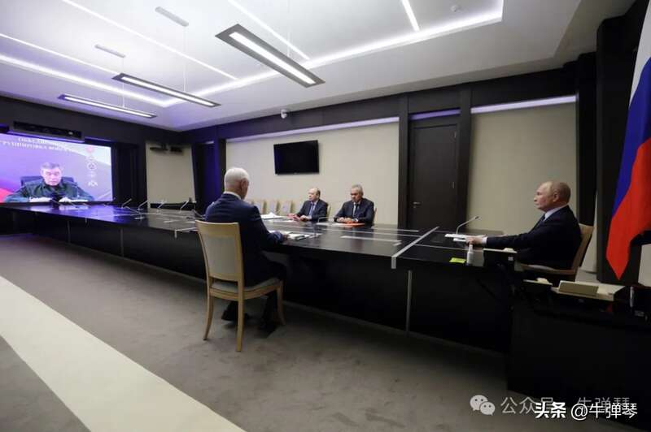
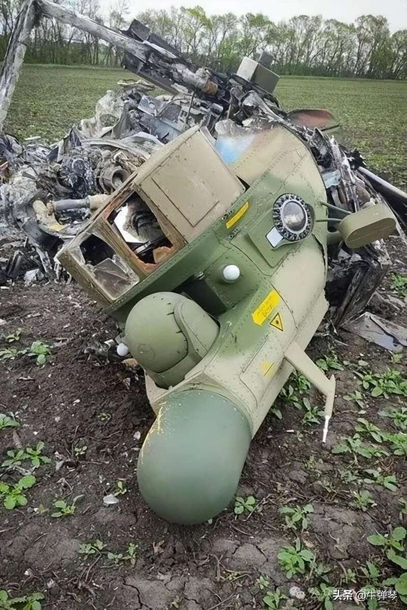
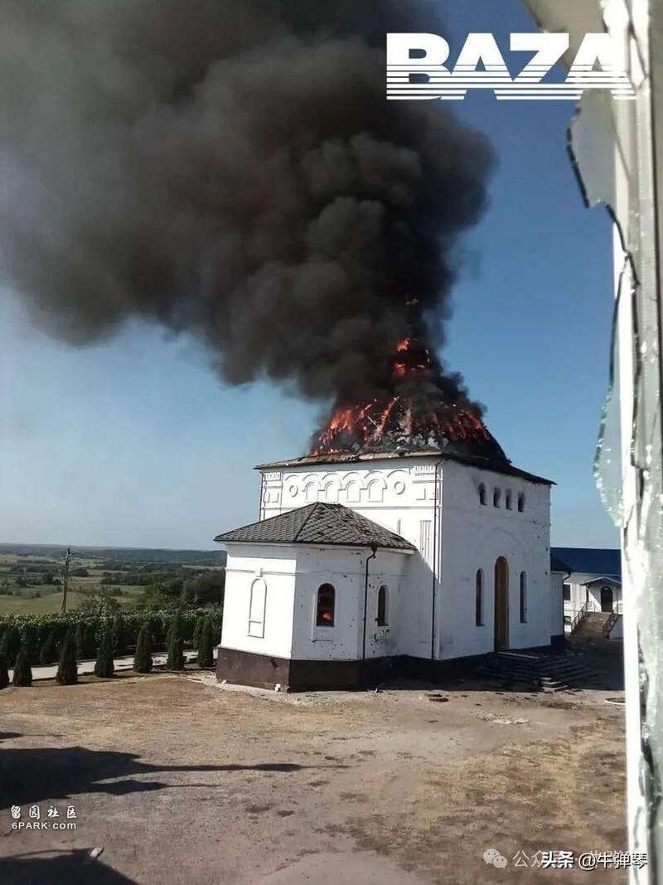
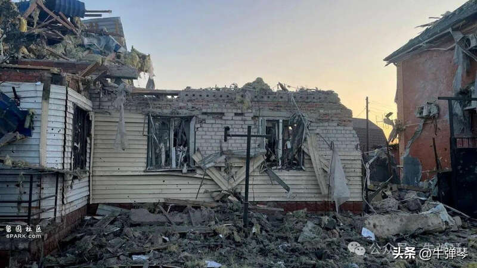
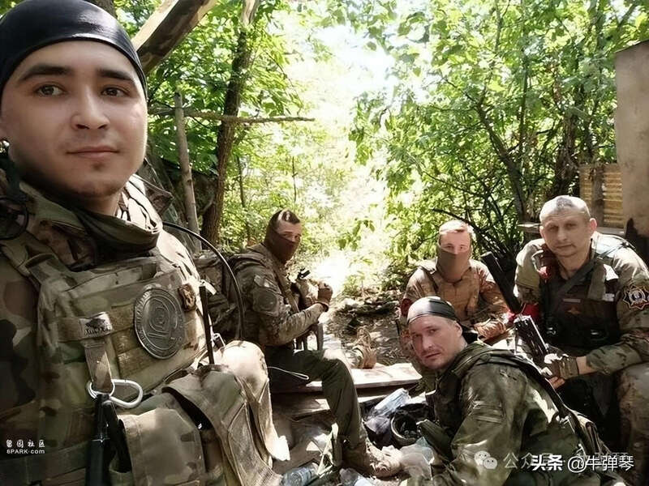

战斗形势果然瞬息万变，战场突然转入俄罗斯境内。
8月6日上午8时左右，大批乌克兰军队，在无人机和强大炮兵火力掩护下，以坦克和装甲车打头阵，迅速突破边境森林田野及多道俄军防线，攻入俄境内库尔斯克地区。
这是俄乌冲突爆发两年半以来，乌军对俄罗斯本土最大规模的一次袭击。
说起来，这也是第二次世界大战结束以来，俄境内遭遇的最大规模一次“入侵”。
战斗进行得非常激烈。
视频显示，一些俄罗斯边境村庄空空荡荡，大批汽车还停留在路边，乌军坦克和装甲车呼啸而过，随后路面被碾压得一片狼藉，不少俄罗斯房屋被摧毁。
尤其让人侧目的，社交媒体上有一段视频显示，大约50名士兵遭到围困，他们最后不得不放下武器，然后被要求排成一列趴在地上……


按照西方媒体的说法，投降的是被围困的俄罗斯士兵。
但一些画面，也显示有被击落的直升机以及被摧毁的大量坦克。
俄罗斯方面，消息立刻传到克里姆林宫，普京随即召集紧急会议，听取俄安全机构、国防部、总参谋部和联邦安全局负责人汇报情况。
显然有些愤怒的普京表示：“如你们所知，基辅政权又一次进行重大挑衅。他们用包括导弹在内的武器对民用设施、住宅和救护车进行无差别攻击……”

俄军总参谋长格拉西莫夫向普京汇报说，大约有1000名乌克兰士兵参加了这次进攻，目标是夺取库尔斯克州苏加地区一线，乌军目前已伤亡315人，其中至少100人被打死。
他说：“俄罗斯边境防御部队与边防部队、增援部队一致行动，在航空兵、导弹部队和炮兵的打击下，敌军在库尔斯克方向向俄罗斯纵深推进已被顶住。”
按照俄国防部声明，乌军包括8辆坦克在内的82辆装甲车辆，已在战斗中被俄军摧毁。


俄方也遭受重大损失。据塔斯社8日报道，俄方已有5人死亡，31人受伤。俄边境数千人被紧急疏散。
库尔斯克州州长西米尔诺宣布：“为了消灭来犯的敌军，我已宣布从8月7日进入紧急状态。”
俄乌冲突的主战场，过去一直在乌克兰东部，但为什么乌军突然进攻库尔斯克？
俄外交部发言人扎哈罗娃的说法是，乌克兰对库尔斯克的“野蛮”进攻，不过是显示乌军在战场不断失利情况下，试图表现出他们还在活动的样子。
“显然，新纳粹分子的期望在那里也没有实现。”扎哈罗娃称，俄军“对敌人进行了决定性的反击，敌人损失惨重”。
战斗仍在激烈进行，怎么看？

三点粗浅看法吧。
第一，乌军在改变策略。
在乌东战场，确实，乌军处在下风。俄军进展虽然缓慢，但仍然在强力推进，拿下一个又一个乌克兰村镇。
所以，乌军另辟蹊径，突然集结军队，突破森林、田野和俄军防线，进攻俄防守薄弱的库尔斯克州，将战场转入俄罗斯境内。
还不得不看到的一个大背景，就是国际形势越发对乌克兰不利。在美国，特朗普多次表态，如果他当选，24小时内就让战争终结。
怎么终结？
西方和乌克兰都认为，特朗普会压乌克兰妥协，放弃部分领土。
乌军必须显示自己的战斗实力，同时为未来谈判获取更多的筹码。
值得注意的是，乌克兰总统泽连斯基，最近提都没提乌军的进攻，但他表示：“俄罗斯的侵略给乌克兰带来了战争，对俄罗斯施加的压力越大，我们就越接近和平。用公正的力量促成公正的和平。”
所以，乌军发动了一次奇袭，但显然这也是一次自杀式攻击。
俄军遭受损失，但进攻的乌军损失更是惨烈。
第二，俄军防守确实拉胯。
敌军突入境内数十公里，大片领土村庄被占领，毫无疑问，这是俄军的奇耻大辱。
所以，也难怪普京要发飙，痛骂这是乌克兰的“重大挑衅”。
从战斗进程看，虽然俄军初期受挫，但毕竟这是在俄境内，孤军深入的乌军，可能短期内会有胜利，但最终难逃被优势军围歼的命运。
但俄军的防守，确实也是一言难尽。
当然，俄乌边境线漫长，俄罗斯兵力紧张，也确实防不胜防。乌克兰也是看准了这一点，精心准备，最后孤注一掷。
但俄军的防守以及情报工作，看来确实要好好总结总结了。

第三，接下来可能更激烈。
对俄军来说，现在最紧要的，必须先扫清库尔斯克战场。
乌军可能会突围，但也可能会继续冒险，甚至不惜代价，试图拿下不远处的俄核电站。
俄罗斯也不敢大意，看报道，俄军已全面加强了对核电站的保护。
但更激烈的还在后面，俄罗斯怎么报复？
我看到，俄前总统梅德韦杰夫就宣称，乌军发动这次越境攻击后，俄罗斯应该扩大目前的战争目标，即占领全部乌克兰领土。
“从现在起，特别军事行动应该具备公开的争夺领土的性质。”梅德韦杰夫宣称，俄军应该向敖德萨、哈尔科夫、第聂伯罗、尼古拉耶夫、基辅以及“其他地区”进军。
一报还一报，这意味着战场将全面扩大。
但关键是，俄军拿得下来吗？乌军会坐以待毙吗？还有，美国和北约会袖手旁观吗？
俄乌冲突已经两年半了，战斗似乎越来越激烈。俄军在乌东战场猛烈进攻，乌军在开辟新的战场，试图将战火烧向俄境内。
很讽刺性地，巴黎奥运会呼吁全球停战，但我们不仅没看到停战，我们看到的是一场场新的战斗正在全面打响，看到更多的人倒在血泊中！
这个动荡的可怕的世界。